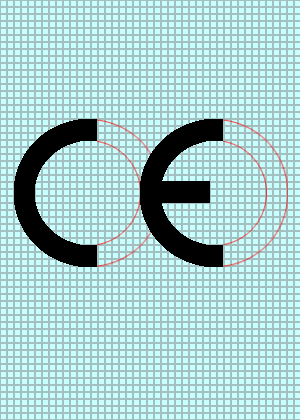

Das CE-Zeichen dokumentiert, dass die gekennzeichnete Maschine
mit den grundlegenden Sicherheits- und Gesundheitsanforderungen
der EU-Maschinenverordnung 2023/1230 übereinstimmt. Das
CE-Zeichen wird in der Regel vom Hersteller selbst vergeben.